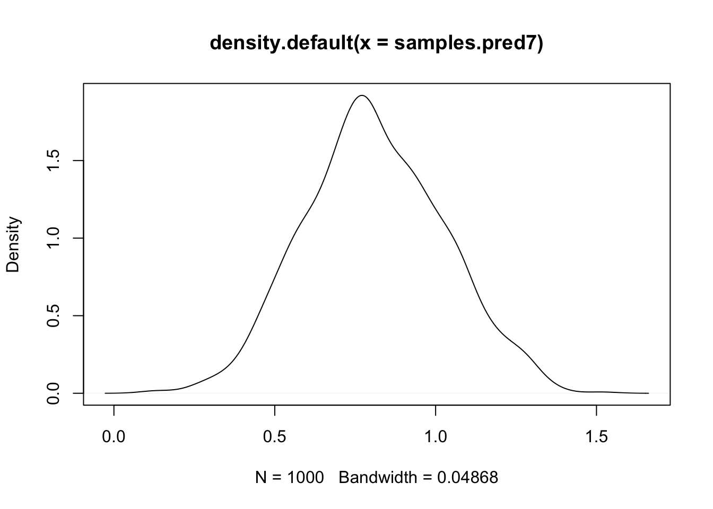
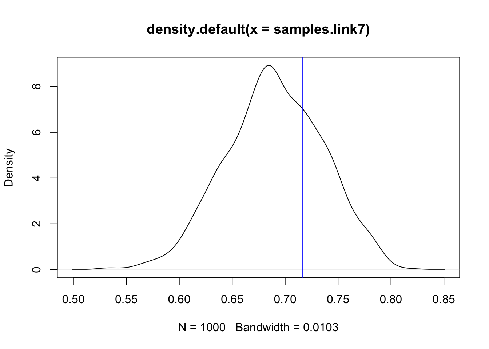
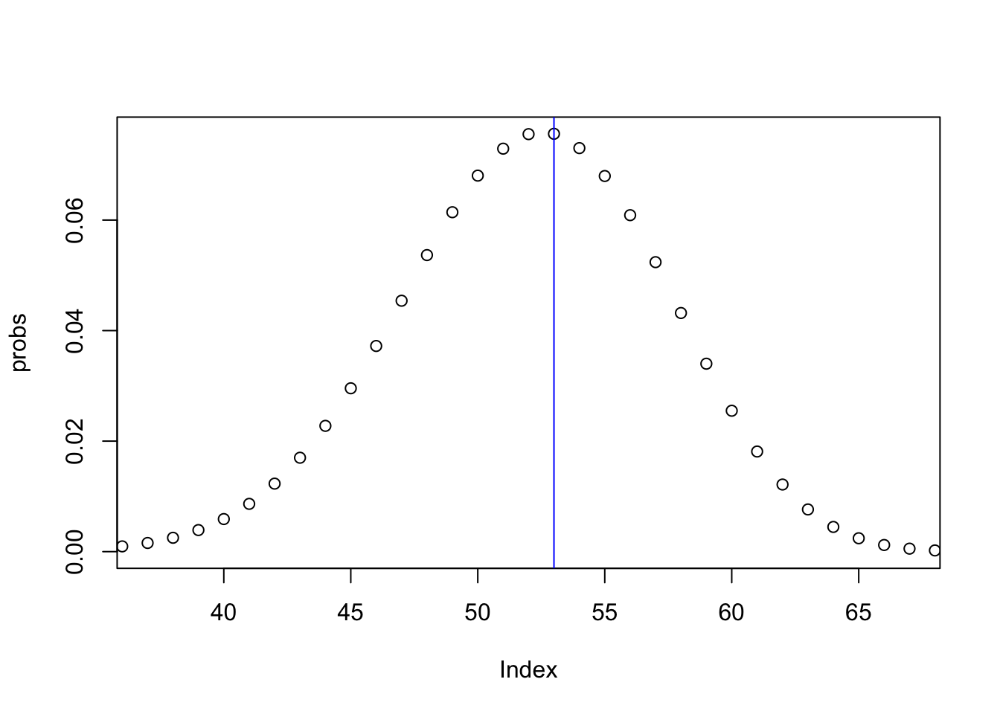

In this topic we discuss how to do predictions with parts of the linear predictor. We use a general approach that should be applicable to all prediction scenarios.
The goal is to learn how to build up simulations for model fit and predictions. There are more convenient approaches if you only want to summarise or plot part of the posterior.
We recommend reading btopic102 first, as this explains the data and the model.
We load any packages and set global options. You may need to install these libraries (Installation and general troubleshooting).
library(INLA)
rm(list=ls())
options(width=70, digits=2)
set.seed(2017)data(Seeds)
df = data.frame(y = Seeds$r, Ntrials = Seeds$n, Seeds[, 3:5])family1 = "binomial"
control.family1 = list(control.link=list(model="logit"))
# number of trials is df$Ntrialshyper1 = list(theta = list(prior="pc.prec", param=c(1,0.01)))
formula1 = y ~ x1 + x2 + f(plate, model="iid", hyper=hyper1)res1 = inla(formula=formula1, data=df,
family=family1, Ntrials=Ntrials,
control.family=control.family1,
control.predictor=list(compute=T),
control.compute=list(config=T))summary(res1)##
## Call:
## c("inla(formula = formula1, family = family1, data = df,
## Ntrials = Ntrials, ", " control.compute = list(config = T),
## control.predictor = list(compute = T), ", " control.family =
## control.family1)")
## Time used:
## Pre = 3.66, Running = 0.169, Post = 0.213, Total = 4.05
## Fixed effects:
## mean sd 0.025quant 0.5quant 0.97quant mode kld
## (Intercept) -0.39 0.18 -0.73 -0.39 -0.044 -0.40 0
## x1 -0.35 0.23 -0.82 -0.35 0.055 -0.33 0
## x2 1.03 0.22 0.60 1.03 1.442 1.04 0
##
## Random effects:
## Name Model
## plate IID model
##
## Model hyperparameters:
## mean sd 0.025quant 0.5quant 0.97quant mode
## Precision for plate 111.37 1236.92 2.98 10.91 226.06 6.06
##
## Expected number of effective parameters(stdev): 9.91(2.94)
## Number of equivalent replicates : 2.12
##
## Marginal log-Likelihood: -68.44
## Posterior marginals for the linear predictor and
## the fitted values are computedn.samples = 1000
samples = inla.posterior.sample(n.samples, result = res1)This function draws posterior samples from the linear predictor and all its components. The samples from the hyper-parameters are only samples from the integration grid (which represents the only hyper-parameter values to compute the posterior of all the latent variables).
The samples is a list of posterior samples, let us look at the first sample.
str(samples[[1]])## List of 3
## $ hyperpar: Named num 5.44
## ..- attr(*, "names")= chr "Precision for plate"
## $ latent : num [1:45, 1] -1.078 -0.232 -1.089 -0.148 -0.437 ...
## ..- attr(*, "dimnames")=List of 2
## .. ..$ : chr [1:45] "Predictor:1" "Predictor:2" "Predictor:3" "Predictor:4" ...
## .. ..$ : chr "sample:1"
## $ logdens :List of 3
## ..$ hyperpar: num -2.66
## ..$ latent : num 95
## ..$ joint : num 92.4Here, $hyperpar is the part of the first sample representing the hyper-parameters, $latent represents all the latent variables, and $logdens is the prior and posterior log probability densities. The $latent, however, is quite complicated.
t(samples[[1]]$latent)## Predictor:1 Predictor:2 Predictor:3 Predictor:4 Predictor:5
## sample:1 -1.1 -0.23 -1.1 -0.15 -0.44
## Predictor:6 Predictor:7 Predictor:8 Predictor:9 Predictor:10
## sample:1 1.7 0.77 1 0.18 0.66
## Predictor:11 Predictor:12 Predictor:13 Predictor:14
## sample:1 1.2 -0.5 -0.85 -0.52
## Predictor:15 Predictor:16 Predictor:17 Predictor:18
## sample:1 -0.48 -0.55 0.23 0.13
## Predictor:19 Predictor:20 Predictor:21 plate:1 plate:2
## sample:1 -0.14 0.67 0.93 -0.49 0.35
## plate:3 plate:4 plate:5 plate:6 plate:7 plate:8 plate:9
## sample:1 -0.5 0.44 0.15 0.83 -0.097 0.17 -0.69
## plate:10 plate:11 plate:12 plate:13 plate:14 plate:15
## sample:1 -0.21 0.36 0.11 -0.24 0.094 0.14
## plate:16 plate:17 plate:18 plate:19 plate:20 plate:21
## sample:1 0.072 -0.61 -0.7 -0.98 -0.17 0.082
## (Intercept):1 x1:1 x2:1
## sample:1 -0.59 -0.033 1.5# - transposed for shorter printing
# - this is a column vectorHere, the names show which part of the latent field these sample values are from. First comes the Predictor, wich is \(\eta\) the linear predictor, then comes the random effect named plate, with its values at each plate level. Then comes the fixed effects (one of them is called (Intercept)).
$latentThe difficulty now is making generic code that will work for very complex models. E.g. in a spatial model, it would be horrific to have to read all the names and figure which was which.
I will now create a generic code though the use of a hidden part of the INLA result object.
res1$misc$configs$contents## $tag
## [1] "Predictor" "plate" "(Intercept)" "x1"
## [5] "x2"
##
## $start
## [1] 1 22 43 44 45
##
## $length
## [1] 21 21 1 1 1Here, you see the names of the latent components, and their start index and their length. Using this, we can find the indices for plate in the following way.
contents = res1$misc$configs$contents
effect = "plate"
id.effect = which(contents$tag==effect)
# - the numerical id of the effect
ind.effect = contents$start[id.effect]-1 + (1:contents$length[id.effect])
# - all the indices for the effect
# - these are the indexes in the sample[[1]]$latent !The first sample from plate, and all the samples from plate can then be found.
## See an example for the first sample
samples[[1]]$latent[ind.effect, , drop=F]## sample:1
## plate:1 -0.492
## plate:2 0.353
## plate:3 -0.504
## plate:4 0.439
## plate:5 0.152
## plate:6 0.825
## plate:7 -0.097
## plate:8 0.168
## plate:9 -0.694
## plate:10 -0.209
## plate:11 0.365
## plate:12 0.114
## plate:13 -0.236
## plate:14 0.094
## plate:15 0.142
## plate:16 0.072
## plate:17 -0.608
## plate:18 -0.702
## plate:19 -0.982
## plate:20 -0.168
## plate:21 0.082## Draw this part of every sample
samples.effect = lapply(samples, function(x) x$latent[ind.effect])We create a more readable version of these samples.
s.eff = matrix(unlist(samples.effect), byrow = T, nrow = length(samples.effect))
# - s.eff means samples.effect, just as a matrix
colnames(s.eff) = rownames(samples[[1]]$latent)[ind.effect]
# - retrieve names from original object
summary(s.eff)## plate:1 plate:2 plate:3 plate:4
## Min. :-1.20 Min. :-0.91 Min. :-1.17 Min. :-0.46
## 1st Qu.:-0.48 1st Qu.:-0.24 1st Qu.:-0.47 1st Qu.: 0.04
## Median :-0.28 Median :-0.07 Median :-0.30 Median : 0.19
## Mean :-0.30 Mean :-0.09 Mean :-0.32 Mean : 0.21
## 3rd Qu.:-0.10 3rd Qu.: 0.06 3rd Qu.:-0.15 3rd Qu.: 0.36
## Max. : 0.51 Max. : 0.75 Max. : 0.43 Max. : 1.05
## plate:5 plate:6 plate:7 plate:8
## Min. :-0.76 Min. :-0.85 Min. :-0.61 Min. :-0.47
## 1st Qu.:-0.10 1st Qu.:-0.09 1st Qu.: 0.01 1st Qu.: 0.09
## Median : 0.04 Median : 0.08 Median : 0.14 Median : 0.26
## Mean : 0.05 Mean : 0.10 Mean : 0.15 Mean : 0.28
## 3rd Qu.: 0.18 3rd Qu.: 0.27 3rd Qu.: 0.29 3rd Qu.: 0.45
## Max. : 0.91 Max. : 1.20 Max. : 0.96 Max. : 1.19
## plate:9 plate:10 plate:11 plate:12
## Min. :-0.81 Min. :-1.06 Min. :-0.88 Min. :-0.68
## 1st Qu.:-0.20 1st Qu.:-0.33 1st Qu.:-0.05 1st Qu.: 0.01
## Median :-0.05 Median :-0.17 Median : 0.10 Median : 0.17
## Mean :-0.06 Mean :-0.19 Mean : 0.13 Mean : 0.21
## 3rd Qu.: 0.07 3rd Qu.:-0.02 3rd Qu.: 0.30 3rd Qu.: 0.37
## Max. : 0.97 Max. : 0.63 Max. : 1.07 Max. : 1.78
## plate:13 plate:14 plate:15 plate:16
## Min. :-1.00 Min. :-1.08 Min. :-0.57 Min. :-1.60
## 1st Qu.:-0.14 1st Qu.:-0.20 1st Qu.: 0.15 1st Qu.:-0.31
## Median : 0.01 Median :-0.04 Median : 0.36 Median :-0.08
## Mean : 0.01 Mean :-0.05 Mean : 0.38 Mean :-0.12
## 3rd Qu.: 0.16 3rd Qu.: 0.11 3rd Qu.: 0.58 3rd Qu.: 0.08
## Max. : 1.00 Max. : 0.80 Max. : 1.68 Max. : 1.66
## plate:17 plate:18 plate:19 plate:20
## Min. :-1.48 Min. :-0.89 Min. :-1.06 Min. :-0.67
## 1st Qu.:-0.47 1st Qu.:-0.20 1st Qu.:-0.26 1st Qu.:-0.03
## Median :-0.25 Median :-0.05 Median :-0.10 Median : 0.10
## Mean :-0.29 Mean :-0.06 Mean :-0.12 Mean : 0.12
## 3rd Qu.:-0.06 3rd Qu.: 0.08 3rd Qu.: 0.04 3rd Qu.: 0.27
## Max. : 0.46 Max. : 1.02 Max. : 0.82 Max. : 0.91
## plate:21
## Min. :-1.62
## 1st Qu.:-0.26
## Median :-0.06
## Mean :-0.09
## 3rd Qu.: 0.10
## Max. : 0.91We compare these samples to the usual posterior summaries.
cbind(colMeans(s.eff), res1$summary.random$plate$mean)## [,1] [,2]
## plate:1 -0.305 -0.287
## plate:2 -0.088 -0.080
## plate:3 -0.318 -0.316
## plate:4 0.211 0.217
## plate:5 0.048 0.055
## plate:6 0.100 0.098
## plate:7 0.150 0.157
## plate:8 0.284 0.284
## plate:9 -0.063 -0.061
## plate:10 -0.187 -0.187
## plate:11 0.128 0.115
## plate:12 0.211 0.206
## plate:13 0.008 0.021
## plate:14 -0.051 -0.059
## plate:15 0.382 0.387
## plate:16 -0.121 -0.126
## plate:17 -0.288 -0.291
## plate:18 -0.059 -0.060
## plate:19 -0.117 -0.110
## plate:20 0.124 0.125
## plate:21 -0.087 -0.085We want to compute a prediction where we already have a datapoint. The goal is to predict for observation 7, which is:
df[7, ]## y Ntrials x1 x2 plate
## 7 53 74 0 1 7The easiest approach is to use the linear predictor. Since this is the 7th row of df, we pick out the 7th predictor. Noe: The value of plate is not important, that is just a covariate value (which happens to be the same as the rown number). The linear predictor always start at the first element of $latent, so we do not need to look for it.
## see one example value
samples[[1]]$latent[7, , drop=F]## sample:1
## Predictor:7 0.77## Draw this part of every sample
samples.pred7 = lapply(samples, function(x) x$latent[7])
samples.pred7 = unlist(samples.pred7)Plot a density of this sample. You could also do a histogram with truehist.
plot(density(samples.pred7))
abline(v=df$y[7])
We now need to transform through the link function and the data sampling. We know we use the logit transform, but we can doublecheck this:
res1$.args$control.family$control.link$model## NULLYou can set up the logit function yourself, or use inla.link.invlogit(x). We transform the samples through the link.
samples.link7 = inla.link.invlogit(samples.pred7)
plot(density(samples.link7))
## Add the naive estimate of binomial probability y/N:
abline(v = df$y[7]/df$Ntrials[7], col="blue")
The following code is specific to discrete likelihoods, as we can compute all the densities exactly. What we do here is discrete integration, computing the probabilities exactly (on the samples that we have).
## What range of observations do we want to compute
discrete.range = 0:100
## Initialize the probabilities
probs = rep(0, length(discrete.range))
for (i in 1:length(samples.link7)) {
probs = probs + dbinom(discrete.range, size=df$Ntrials[7], prob = samples.link7[i])
}
probs = probs / length(samples)
names(probs) = discrete.rangeLet us now plot the results, together with the true value.
plot(probs, xlim=c(37, 67))
abline(v=df$y[7], col="blue")
It is important to know how to build up the (linear) predictor sample by adding together the model components (fixed effects and random effects), as this enables you to do anything! Knowing how to do this lets us predict in unsampled locations also.
## Remember the covariate values
df[7, ]## y Ntrials x1 x2 plate
## 7 53 74 0 1 7## Remember the formula
res1$.args$formula## y ~ x1 + x2 + f(plate, model = "iid", hyper = hyper1)
## NULLFor sample nr 57 (as an example) we add it all up:
nr = 57
s = samples[[nr]]$latent
## beta1 * 0
f.x1.0 = s[44, , drop=F] * 0
## beta1 * 1
f.x2.1 = s[45, , drop=F] * 1
## f(plate = 7)
f.plate.7 = s[28, , drop=F]
## The intercept
int = s[43, , drop=F]
sum = drop(f.x1.0 + f.x2.1 + f.plate.7 + int)
list(model.component.sum.7 = sum, linear.predictor.7 = samples.pred7[nr])## $model.component.sum.7
## [1] 1
##
## $linear.predictor.7
## [1] 1These two numbers are equal, or approximately equal, as they represent the exact same thing! To do this for all the sample numbers, create a for loop for (nr in 1:length(samples)).
Using a similar method to what we just did, we can create a new experiment, and predict it.
our.experiment = list(x1 = 0, x2 = 0, plate = 7)
nr = 57
s = samples[[nr]]$latent
## beta1 * 0
f.x1.0 = s[44, , drop=F] * our.experiment$x1
## beta1 * 1
f.x2.1 = s[45, , drop=F] * our.experiment$x2
## f(plate = 7)
# - the same plate as before
f.plate.7 = s[28, , drop=F]
## The intercept
int = s[43, , drop=F]
predictor.our.experiment = drop(f.x1.0 + f.x2.1 + f.plate.7 + int)Again, to get all the samples, create a for loop. Then go through the link and the likelihood as we did in the predictor example.
Now, we cannot use the sample from plate number 7. We want a new plate, let us call it plate number 50. Indeed, the result of our INLA model does not include a plate number 50.
Even though there is no information in our data about what happens at plate number 50, there is information about what happens on plates “in general”. This information lies in the pooling parameter sigma/precision for plate. Let us find our sample for this sigma/precision.
## As before:
our.experiment = list(x1 = 0, x2 = 0, plate = 50)
nr = 57
## Want a hyper-parameter
plate.precision = samples[[nr]]$hyperpar[1]
plate.sigma = plate.precision^-0.5
names(plate.sigma) = "sigma"
print(plate.sigma)## sigma
## 0.43Our model for plate was a Gaussian IID effect, with standard deviation sigma. So, we can draw a sample ourselves for this new plate:
sample.plate50 = rnorm(1, sd=plate.sigma)And then we can complete our sample number nr:
## As before
s = samples[[nr]]$latent
f.x1.0 = s[44, , drop=F] * our.experiment$x1
f.x2.1 = s[45, , drop=F] * our.experiment$x2
## f(plate = 50)
f.plate.50 = sample.plate50
## The intercept
int = s[43, , drop=F]
predictor.experiment.newplate = drop(f.x1.0 + f.x2.1 + f.plate.50 + int)A for-loop is needed to produce all the samples. We also need transformation through the link and adding the likelihood.
9 Comments